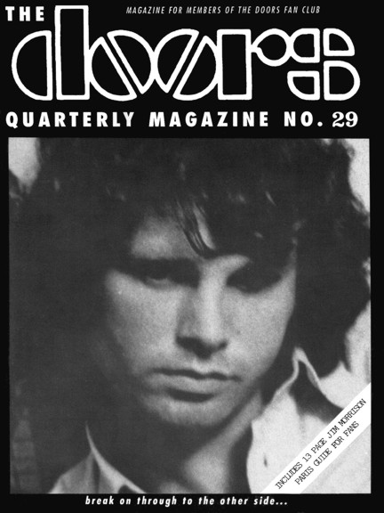

| |

Depending
on your computer's safety settings (antivirus, firewall,
etc.)
the download may generate a standard warning, that is
because the
magazine is a flipbook in the .EXE file format. We
guarantee that
the file is absolutely harmless
and perfectly safe. |
|

A new
window will open with the magazine for you to read online
without the need to download it onto your computer.
Again, we guarantee that it's absolutely
harmless
and perfectly safe. |
|
| |
 |
|
Dear fans, DQ #29 was a kind of anniversary issue for
the The Doors Quarterly - it was celebrating its
10th anniversary. Nobody had believed the
magazine would last that long - 29 issues in
10 years, not bad, I thought.
And 1993 was a pretty good year - meeting Ray Manzarek in
L.A., Frank and Kathy Lisciandro
in Santa Barbara and Patricia Kennealy-Morrison in New
York, and filming all three of them for
TV interviews (they were used in quite a few TV Specials)
... hey, that was great! I also met
Robby at his house in the canyon and attended a concert
of him and his band in Costa Mesa,
California. I also saw The Soft Parade in Asbury Park,
New Jersey, and took a flight to San
Francisco where I met Jello Biafra of The Dead Kennedys
for an interview ... what a fantastic
summer it was!
Finally, a 64-page DQ #29 came out, telling fanclub
members all the stories, great news and
all activities from creative people around The Doors.
Check for yourself - news and gossip,
book/CD reviews, concert reviews, Dan Salomon’s
revealing chronology of the night
Pamela Courson died (this article includes rare
documents), my interview with Gilles
Yepremian, an early version of my Paris Guide, a project
I did with Patricia Kennealy-Morrison
(Fans asking her questions) plus some reproductions of
concert posters including a 4-line
poem handwritten by Jim Morrison - could a fan in 1993
expect more?
Have fun reading the digital version of The Doors
Quarterly 29!
A splendid time is guaranteed for all.
Rainer Moddemann.
And don’t forget:
Please note that your digital copy of The Doors Quarterly
Magazine 29 hasn't been altered
in any way. You get it as it was published on September
26, 1993 (!). Be aware that all
addresses (private, phone, email and web) are no longer
valid. Books, CDs or posters and
other stuff might not be available anymore. Please do not
respond to any of the small ads or
blame anyone for incorrect details - all writers just did
the best they could back in 1993.
And ... please do NOT reply to Freddy Tornberg’s ad
on page 21 - Freddy is not with us
anymore, he died on December 25, 2010 aged 65.
Enjoy your digital issue and let us know what you think
... we will continue soon by
publishing a digital version of DQ #28.
CU and have fun!
Thanks to Kevin Chiotis for all of his work!
PS ... if you would like to obtain an original paper copy
of this Doors Quarterly Magazine 29
including a free poster please send a private FB message
to Rainer Moddemann - thank you!
But hurry, just very few original copies are left ...
|
|